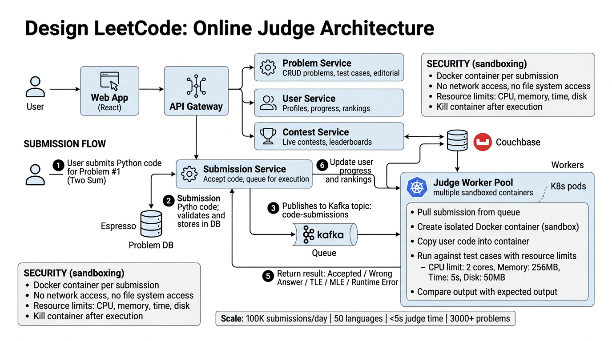

A complete deep dive into the architecture of an online judge platform — sandboxed code execution, contest systems, judge worker pools, and real-time leaderboards.
LeetCode is an online coding platform where engineers practice algorithmic problems, participate in weekly contests, and prepare for technical interviews. The system must accept code in dozens of programming languages, execute it securely against hidden test cases, and return verdicts within seconds.
| Verdict | Abbreviation | Meaning |
|---|---|---|
| Accepted | AC | All test cases passed within limits |
| Wrong Answer | WA | Output does not match expected output |
| Time Limit Exceeded | TLE | Execution exceeded the time constraint |
| Memory Limit Exceeded | MLE | Process used more memory than allowed |
| Runtime Error | RE | Segfault, division by zero, stack overflow, etc. |
| Compilation Error | CE | Code failed to compile |
Manages the problem catalog — descriptions, difficulty tags, hints, editorial solutions, and test cases. Serves problem pages with Markdown rendering and supports CRUD for problem setters.
Receives user code submissions, validates them, persists to the database, and enqueues them for judging. Tracks submission status and streams verdict updates to the client via WebSocket.
A horizontally scalable pool of workers that dequeue submissions, spin up sandboxed containers, compile and execute code against test cases, and report verdicts back. The most compute-intensive component.
Authentication, profiles, submission history, streak tracking, premium subscriptions, and progress analytics. Maintains solved-problem bitmaps for O(1) lookups.
Manages contest lifecycle — registration, problem reveal at start time, real-time leaderboard computation, and final ranking with penalty calculation.
Rate limiting, authentication, request routing, and anti-cheat throttling. Limits submission frequency to prevent abuse (e.g., max 10 submissions/minute per user).

QUEUED, and publishes it to the submission queue.The submission queue (Kafka / SQS) decouples ingestion from execution. During contest spikes, thousands of submissions arrive within seconds. The queue absorbs the burst while workers process at a steady rate, preventing overload and ensuring no submission is lost.
Executing arbitrary user code is the most security-critical component. Each submission runs in a disposable, isolated container with strict resource constraints.
Each submission gets its own short-lived Docker container. The container is created from a pre-built language-specific image, runs the code, and is destroyed immediately after. No state persists between submissions.
/tmp is writable| Resource | Limit | Enforcement |
|---|---|---|
| CPU | 2 cores | cgroup cpu.cfs_quota_us / cpu.cfs_period_us |
| Memory | 256 MB | cgroup memory.limit_in_bytes — OOM killer terminates on breach |
| Wall-Clock Time | 5 seconds | External watchdog timer kills container after timeout |
| Disk | 50 MB | tmpfs mount with size=50m on /tmp |
| Network | None | Empty network namespace — no interfaces created |
| Processes | 64 | cgroup pids.max prevents fork bombs |
| Open Files | 256 | RLIMIT_NOFILE set via setrlimit |
judge-python:3.11, judge-cpp:gcc12) are pre-pulled on every worker node. Warm cache ensures <100ms container creation./submission (read-only).Each supported language has a dedicated Docker image with the compiler/runtime pre-installed. Images are versioned and pinned for reproducibility.
| Language | Image Base | Compile Command | Run Command |
|---|---|---|---|
| C++ | gcc:12-slim | g++ -O2 -std=c++17 -o sol sol.cpp | ./sol |
| Python 3 | python:3.11-slim | N/A (interpreted) | python3 sol.py |
| Java | openjdk:17-slim | javac Solution.java | java -Xmx256m Solution |
| Go | golang:1.21-alpine | go build -o sol sol.go | ./sol |
| Rust | rust:1.73-slim | rustc -O sol.rs -o sol | ./sol |
| JavaScript | node:20-slim | N/A (interpreted) | node sol.js |
Interpreted languages are inherently slower. The judge applies per-language multipliers to the base time limit: C/C++ = 1x, Java = 2x, Python = 5x, JavaScript = 3x. This ensures fair comparison of algorithmic complexity across languages.
Weekly contests see 20,000+ concurrent participants submitting code simultaneously. The contest system must handle burst traffic, maintain a real-time leaderboard, and ensure fair ranking.
The leaderboard is powered by Redis sorted sets (ZADD / ZREVRANGE). Each participant's score is stored as a composite value encoding both solved count and penalty time, enabling O(log N) updates and O(log N + K) range queries.
Score = (problems_solved * 1,000,000) - total_penalty_minutes ZADD contest:weekly-350 <score> <user_id> ZREVRANGE contest:weekly-350 0 49 WITHSCORES -- top 50
solved_count * 1M - (finish_time + penalty * wrong_attempts)ZADD updates the sorted setZREVRANK — O(log N)During contests, submission rate spikes 10–50x above baseline. The system handles this through:
| Factor | Weight | Description |
|---|---|---|
| Problems Solved | Primary | More solved = higher rank (always dominant factor) |
| Finish Time | Secondary | Time from contest start to last AC submission |
| Wrong Attempt Penalty | +5 min each | Each wrong submission on a solved problem adds 5 minutes penalty |
| Unsolved Penalties | None | Wrong attempts on unsolved problems carry no penalty |
After each contest, user ratings are updated using a system similar to Codeforces' Elo variant. Expected rank is computed from current rating, and the delta is proportional to (expected_rank - actual_rank). New users have higher volatility (larger rating changes) that decreases over time.
new_rating = old_rating + K * (expected_rank - actual_rank) / N K = base_factor * volatility_multiplier volatility = max(0.5, 1.0 - contests_participated * 0.02)
| Column | Type | Notes |
|---|---|---|
id | BIGINT PK | Auto-increment problem ID |
title | VARCHAR(255) | e.g., "Two Sum" |
slug | VARCHAR(255) UNIQUE | URL-safe slug: "two-sum" |
difficulty | ENUM(Easy, Medium, Hard) | Difficulty classification |
description_md | TEXT | Problem statement in Markdown |
constraints | TEXT | Input constraints (e.g., 1 ≤ n ≤ 105) |
time_limit_ms | INT | Base time limit (before language multiplier) |
memory_limit_mb | INT | Memory limit in MB |
tags | JSON | ["array", "hash-table", "two-pointers"] |
is_premium | BOOLEAN | Locked behind subscription |
created_at | TIMESTAMP | Creation time |
| Column | Type | Notes |
|---|---|---|
id | BIGINT PK | Auto-increment |
problem_id | BIGINT FK | References problems.id |
input | TEXT | Test input (may be large for stress tests) |
expected_output | TEXT | Expected stdout |
is_sample | BOOLEAN | Shown to user as example (true) or hidden (false) |
ordinal | INT | Execution order; small cases first for early termination |
| Column | Type | Notes |
|---|---|---|
id | BIGINT PK | Snowflake-style globally unique ID |
user_id | BIGINT FK | References users.id |
problem_id | BIGINT FK | References problems.id |
language | VARCHAR(32) | e.g., "python3", "cpp", "java" |
source_code | TEXT | Submitted source code (< 64KB) |
status | ENUM | QUEUED, JUDGING, AC, WA, TLE, MLE, RE, CE |
runtime_ms | INT | Execution time of accepted solution |
memory_kb | INT | Peak memory usage |
contest_id | BIGINT FK NULL | Non-null if submitted during a contest |
created_at | TIMESTAMP | Submission timestamp |
| Column | Type | Notes |
|---|---|---|
id | BIGINT PK | Auto-increment |
username | VARCHAR(64) UNIQUE | Display name |
email | VARCHAR(255) UNIQUE | Login credential |
rating | INT DEFAULT 1500 | Contest Elo rating |
solved_count | INT | Total problems solved |
streak_days | INT | Current daily submission streak |
is_premium | BOOLEAN | Premium subscription status |
created_at | TIMESTAMP | Registration time |
| Column | Type | Notes |
|---|---|---|
id | BIGINT PK | Auto-increment |
title | VARCHAR(255) | e.g., "Weekly Contest 350" |
start_time | TIMESTAMP | Contest begins (problems revealed) |
duration_minutes | INT | Typically 90 minutes |
problem_ids | JSON | Ordered list of 4 problem IDs |
status | ENUM | UPCOMING, ACTIVE, FINISHED |
participants | INT | Registered participant count |
submissions: Composite index on (user_id, problem_id, created_at DESC) for "my submissions" queriessubmissions: Index on (problem_id, status, runtime_ms) for percentile ranking ("faster than X%")submissions: Index on (contest_id, user_id) for contest submission lookupsproblems: Full-text index on title + description_md for searchtest_cases: Index on (problem_id, ordinal) for ordered retrievalHow each LeetCode component maps to LinkedIn's infrastructure stack:
| LeetCode Component | LinkedIn Equivalent | Why |
|---|---|---|
| Problem/User/Submission DB | Espresso | LinkedIn's distributed document store. Handles user profiles, content, and transactional data with strong consistency and secondary indexes. |
| Submission Queue | Kafka | LinkedIn created Kafka. Durable message queue decouples submission ingestion from judge execution. Handles burst traffic with at-least-once delivery guarantees. |
| Judge Worker Pool | K8s / Nimbus | LinkedIn's Kubernetes platform (Nimbus) orchestrates containerized workloads. Judge workers run as K8s pods with HPA auto-scaling based on queue depth. |
| Leaderboard Cache | Couchbase | LinkedIn uses Couchbase as a distributed cache layer. Replaces Redis sorted sets for leaderboard with Couchbase's in-memory performance and multi-datacenter replication. |
| API Gateway / REST APIs | Rest.li | LinkedIn's REST framework for building scalable APIs. Provides schema validation, backward compatibility, and automated documentation. |
| Verdict Notifications | Kafka | Verdict events published to Kafka topics; consumed by notification service to push real-time updates via WebSocket/SSE. |
| Code Execution Sandbox | K8s / Nimbus | Nimbus pods with strict resource quotas, network policies (no egress), and ephemeral containers mirror the sandbox isolation model. |
User Browser
↓
Rest.li API Gateway (rate limiting, auth)
↓
Espresso (persist submission)
↓
Kafka (submission-events topic)
↓
Nimbus Judge Workers (K8s pods, auto-scaled)
↓
Espresso (update verdict) → Kafka (verdict-events)
↓
Couchbase (leaderboard cache) → SSE push to client
Key points:
fork (beyond limit), socket, mount, ptraceKey points:
PriorityClass: contest-critical; practice gets best-effortKey points:
docker kill after the time limit--stop-timeout=1 so Docker sends SIGKILL 1 second after SIGTERMKey points:
:latest)|a - b| < 1e-6)Key points: